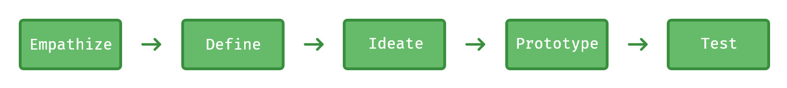

The Coding DB Case Study
Role: UX Designer, UX Researcher, Visual Designer
Responsibilities: Conducting interviews, paper and digital wireframing, low and high-fidelity prototyping, accounting for accessibility, iterating on designs and responsive design.
Duration: 2-3 Weeks
Aaron Perez
Product overview
The Coding Database is a website to find courses and resources of every programming language on the internet. You can find and filter almost every existing course or try the ones we make ourselves. You can also check other resources like documentation, cheat sheets, featured blogs, and much more. Let's code!
The problem we are trying to address here is students feeling overwhelmed when they need to learn new coding tools by not finding good information sources.
Our main goal is to design a user friendly website where users can find courses and resources of coding related tools like programming languages or software development frameworks.
The Process
I followed the Design Thinking Process framework because I think that empathizing with the user is key to develop the best possible product.
During this project I was able to understand users pain points, conduct interviews for creating empathy maps, create personas, user stories and a user journey map.
I have developed problem statements and conducted a competitive audit. I came up with ideas using techniques like How Might We? and Crazy Eights.
Finally, I determined the Information Architecure and builded a sitemap before creating wireframes and prototypes. We will see some of these procedures down below.
Persona: Maria
Maria is a 24-year-old Junior Software Developer who likes spending time with her family. She just found a job and she needs to learn lots of new tools and languages. She feels overwhelmed when she has to search on the web.
“Coding let you be free and give you the possibility to create new awesome things”
Goals
- Learn new tools, languages and frameworks.
- She wants to spend more time coding than searching.
Frustrations
- She spends way too much time searching for tutorials.
- She feels bored in almost every tutorial as they are not easy to follow.
Problem Statement
María is a programmer who needs to easily find better tutorials and resources about coding because she wants to learn new tools like programming languages.
User pain points
- Time wasted searching on the web for the courses and resources she wants.
- Video tutorials are not engaging enough.
Competitive audit

Initial Designs
.jpg)
.jpg)
During the ideation process, several screens were created. I took the logo and description introduction over a more conventional navigation bar as I think it's not needed. Ideas like showing tools as a carousel or popping cards for each tool were also discarded.
.jpg)
.jpg)
.jpg)
After reviewing some options, I came up with the idea of using tabs. I think it was the best way to show the two main parts of the tool page. I also wanted free space and an obstacle free happy path.
After reviewing some options, I came up with the idea of using tabs. I think it was the best way to show the two main parts of the tool page. I also wanted free space and an obstacle free happy path.